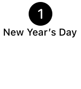
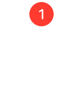
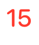
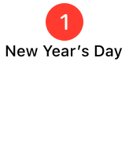
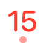

ヘルプ
祝日の設定
祝日は、祝日のカレンダーを設定することで変更ができます。
デバイスに内蔵されている祝日カレンダーなどを設定してください。
カレンダーの名称は、デバイスに設定されている地域によって変わり、日本の場合は、「日本の祝日」になります。
祝日をカスタマイズしたい場合は、別途、祝日用のカレンダーを作成して設定してください。
祝日の色を変更することはできません。
祝日カレンダーの動き
- 予定が登録されている日付が赤色になります。
- アプリの月表示では、予定名は表示されません。
- 予定の追加はできません。
祝日カレンダーの予定も追加をしたい場合は、イベントカレンダーと両方に設定してください。
イベントカレンダーと祝日カレンダーの設定による差
| 設定内容 | ||||
|---|---|---|---|---|
| イベント | 祝日 | アプリの月表示 | ウィジェットの表示 | 予定の追加 |
| ○ | × |  | ○ | |
| × | ○ |  |  | × |
| ○ | ○ |  |  | ○ |